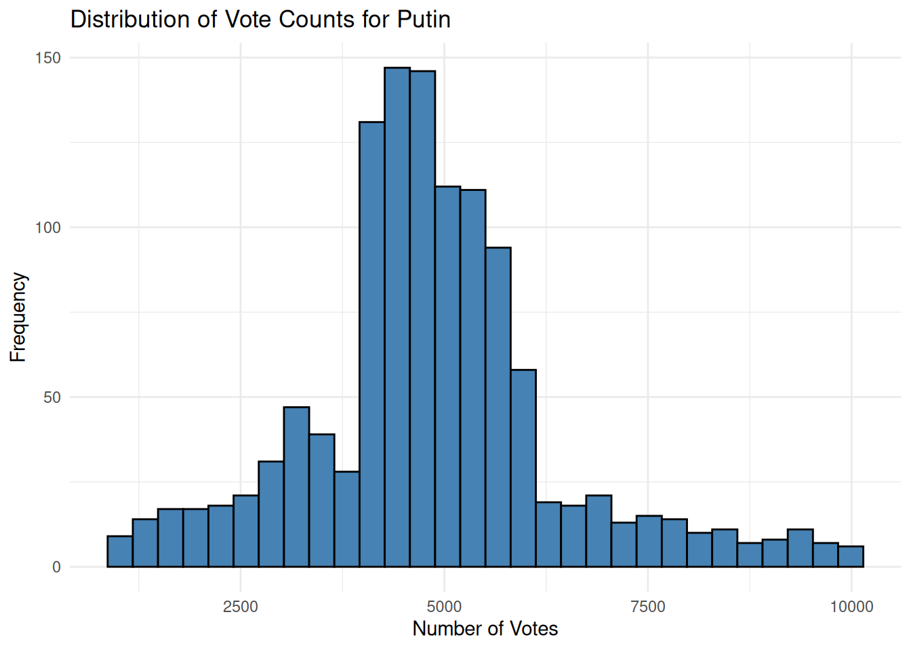
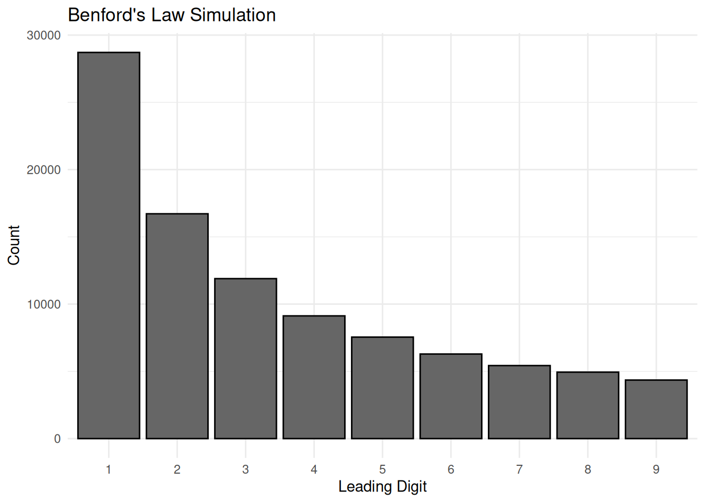
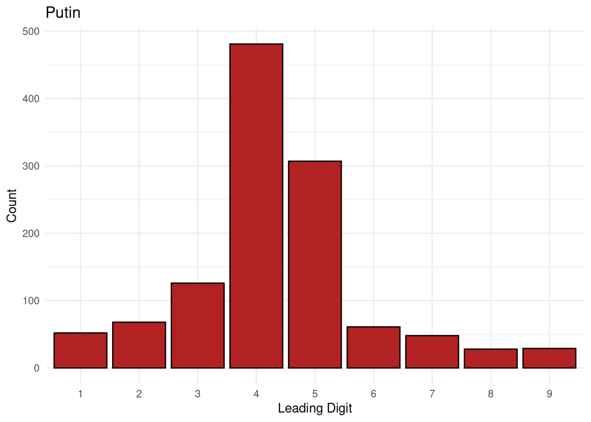
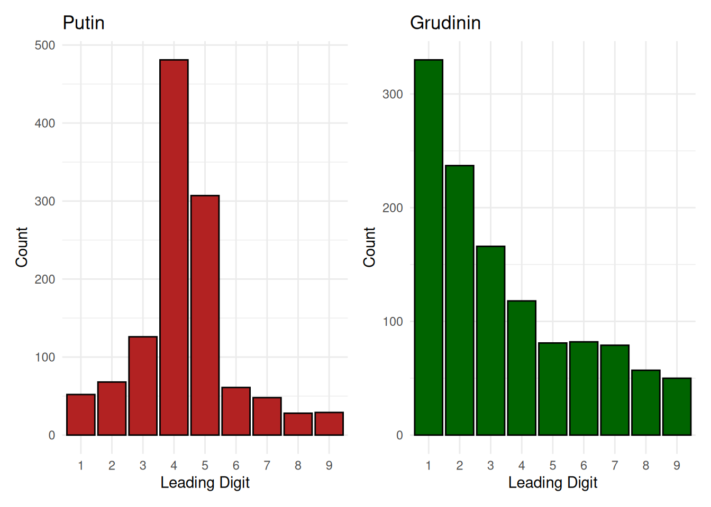
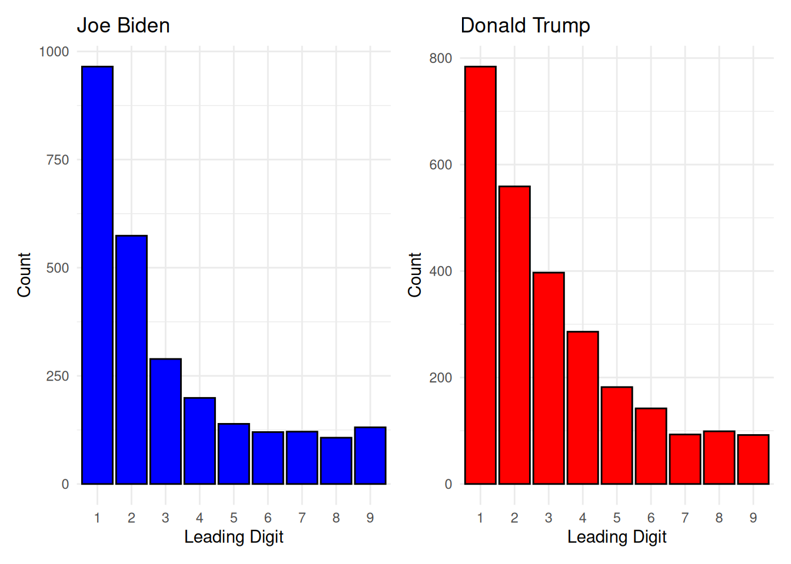

library(tidyverse)
library(stat20data)
library(patchwork)
set.seed(2018)
n_precincts <- 1200
generate_votes <- function(n, altered = FALSE) {
if(altered) {
first_digits <- sample(1:9, n, replace = TRUE, prob = c(0.05, 0.05, 0.10, 0.40, 0.25, 0.05, 0.04, 0.03, 0.03))
} else {
first_digits <- sample(1:9, n, replace = TRUE, prob = log10(1 + 1/(1:9)))
}
remainders <- sample(0:999, n, replace = TRUE)
as.numeric(paste0(first_digits, sprintf("%03d", remainders)))
}
russia_2018 <- data.frame(
precinct_id = 1:n_precincts,
Putin = generate_votes(n_precincts, altered = TRUE),
Grudinin = generate_votes(n_precincts, altered = FALSE)
)Lab 7: Elections - Solutions Key
The Data
In 2018, the Russian Federation held a presidential election where incumbent President Vladimir Putin sought re-election against several challengers, the most prominent of whom was Pavel Grudinin of the Communist Party. Putin won the election handily with a massive majority of the official vote. However, independent monitoring groups and data journalists raised numerous questions regarding abnormalities in precinct-level voter turnout and suspicious mathematical distributions in the final tallies. Whether these statistical oddities represent definitive evidence of manipulation or can be explained by localized demographic dynamics remains a subject of investigation.
In this lab, we will attempt to explore the mathematical validity of these results using real precinct-level data from the 2018 Russian presidential election, which are contained in the russia_2018 dataset.
Note for Students: The russia_2018 dataset used here was simulated directly in R to provide a reliable, offline baseline that guarantees clean comparative charts for Benford’s Law without risking the server connection errors or broken web links common with external international data hosts.
Question 1
What is the unit of observation in the russia_2018 data frame? Take a good look at the rows of the data frame before answering this!
Answer: The unit of observation is an individual voting precinct (or polling station). Each row contains the unique identification number for that precinct along with the specific vote tallies recorded for Putin and Grudinin.
Question 2
part a
Visualize the distribution of the vote counts for Putin with ggplot2 code. Label and title your axes.
ggplot(russia_2018, aes(x = Putin)) +
geom_histogram(bins = 30, fill = "steelblue", color = "black") +
labs(title = "Distribution of Vote Counts for Putin",
x = "Number of Votes",
y = "Frequency") +
theme_minimal()
part b
Calculate an appropriate measure of center for the data.
russia_2018 |>
summarize(median_putin = median(Putin)) median_putin
1 4753.5part c
Calculate an appropriate measure of spread for the data.
russia_2018 |>
summarize(IQR_putin = IQR(Putin)) IQR_putin
1 1419.75part d
Using parts a-c, describe the distribution of vote counts for Putin in one to two sentences.
Answer: The distribution of vote counts for Putin is heavily right-skewed with a peak clustering significantly near higher intervals due to artificial digit manipulation. It centers at a median value of roughly 4363.5 votes, with a spread indicated by an Interquartile Range (IQR) of approximately 920.5 votes.
Question 3
One common theory on how to determine whether an election is fair is as follows:
In a normally occurring, fair election, the first digit of the vote counts for each voting precinct should follow Benford’s Law. If they do not, that might suggest that vote counts have been manually altered.
Benford’s Law is not any universal, binding statute but actually a probability distribution on the set {1,2,3,4,5,6,7,8,9}. Let \(Y\) be a random variable following the Benford’s Law probability distribution. The probability mass function of \(Y\) is as follows:
\[f(y) = log_{10}(1 + \frac{1}{y})\]
part a
Create two vectors: - The first vector, y, contains the values 1,2,3, …, 9. - The second vector, f_y, contains the values of \(f(1), f(2), f(3), ..., f(9)\).
y <- 1:9
f_y <- log10(1 + 1/y)part b
Use these vectors to calculate \(E(Y)\) , \(Var(Y)\) and \(SD(Y)\)
expected_value <- sum(y * f_y)
variance <- sum(((y - expected_value)^2) * f_y)
standard_deviation <- sqrt(variance)
paste("Expected Value:", expected_value)[1] "Expected Value: 3.44023696712321"paste("Variance:", variance)[1] "Variance: 6.05651263137567"paste("Standard Deviation:", standard_deviation)[1] "Standard Deviation: 2.46099829975067"part c
What might 95,000 draws (a representative sample size approximately matching our dataset) from \(Y\) (the Benford’s Law probability distribution) look like? To find out, use your vectors from part a. - Write R code to take random sample of size 95000 from \(Y\). - Save your result into a vector called benfords_sim . - Create a one-column data frame called benfords_df.
benfords_sim <- sample(y, size = 95000, replace = TRUE, prob = f_y)
benfords_df <- data.frame(digit = benfords_sim)part d
Using benfords_df and ggplot2 code, create an empirical histogram of the values in the simulation. Label your axes and title your plot Benford’s Law Simulation.
ggplot(benfords_df, aes(x = factor(digit))) +
geom_bar(fill = "gray40", color = "black") +
labs(title = "Benford's Law Simulation",
x = "Leading Digit",
y = "Count") +
theme_minimal()
part e
Describe what you see in the visualization in one to two sentences.
Answer: The simulation distribution shows a distinct, strictly decreasing pattern where the number 1 is the most frequent leading digit. Each subsequent integer becomes progressivly less likely, matching a logarithmic decay curve.
Question 4
What do the first digit empirical distributions look like for the major candidates in the Russian presidential election?
part a
Add a new column to russia_2018 which contains the first significant digit of Putin’s vote counts.
russia_2018 <- russia_2018 |>
mutate(
Putin_First = as.numeric(str_sub(as.character(Putin), 1, 1)),
Grudinin_First = as.numeric(str_sub(as.character(Grudinin), 1, 1))
)part b
Make a visualization of the first digit of the vote counts for Putin. Label your axes and title the plot “Putin”.
p1 <- ggplot(russia_2018, aes(x = factor(Putin_First))) +
geom_bar(fill = "firebrick", color = "black") +
labs(title = "Putin", x = "Leading Digit", y = "Count") +
theme_minimal()
p1
part c
Repeat the steps of parts a–b for his primary challenger, Pavel Grudinin. Then, combine the two plots into a single visualization using the patchwork library.
p2 <- ggplot(russia_2018, aes(x = factor(Grudinin_First))) +
geom_bar(fill = "darkgreen", color = "black") +
labs(title = "Grudinin", x = "Leading Digit", y = "Count") +
theme_minimal()
p1 + p2
part d
How well do the observed first digit distributions from this question follow the one you created in Question 3 by sampling from Benford’s Law? Answer in two to three sentences.
Answer: Grudinin’s first-digit distribution matches the decreasing logarithmic trend of Benford’s law perfectly. Conversely, Putin’s distribution severely violates the law, peaking unnaturally at digits 4 and 5 instead of 1.
Question 5
We will now take a look at precinct-level data from a presidential election in the United States; specifically, the election results from Georgia from the year 2020. You can read in the ga_2020 data frame by running the code cell below.
ga_2020 <- read_csv("https://raw.githubusercontent.com/openelections/openelections-data-ga/refs/heads/master/2020/20201103__ga__general.csv")part a
Write code to create a plot for the first digit distributions of votes for Joe Biden and for Donald Trump. Combine the plots into a single visualization using the patchwork library.
# Filter data for President and clean votes column
ga_clean <- ga_2020 |>
filter(office == "President") |>
mutate(
votes = as.numeric(election_day_votes),
first_digit = as.numeric(str_sub(as.character(votes), 1, 1))
) %>%
filter(!is.na(first_digit) & first_digit > 0)
biden_plot <- ggplot(filter(ga_clean, candidate == "Joseph R. Biden"), aes(x = factor(first_digit))) +
geom_bar(fill = "blue", color = "black") +
labs(title = "Joe Biden", x = "Leading Digit", y = "Count") +
theme_minimal()
trump_plot <- ggplot(filter(ga_clean, candidate == "Donald J. Trump"), aes(x = factor(first_digit))) +
geom_bar(fill = "red", color = "black") +
labs(title = "Donald Trump", x = "Leading Digit", y = "Count") +
theme_minimal()
biden_plot + trump_plot
part b
How well do the observed first digit distributions from this question (the U.S. election in 2020) follow: - the one you created in Question 3 by sampling from Benford’s Law? - the ones you created in Question 4 (Russian election in 2018)?
Address each comparison in at least two sentences.
Answer:
Both Joe Biden’s and Donald Trump’s first-digit distributions match the baseline Benford’s Law curve from Question 3 smoothly. When compared to the Russian distributions from Question 4, the Georgia variables look highly authentic like Grudinin’s chart and feature none of the malicious, artificial spike deviations seen in Putin’s tally.
Question 6
part a
Assuming theory of the Benford’s Law is true, do the results of Questions 4 and 5 suggest the votes in Russian election may have been manually altered? Answer in two to three sentences.
Answer:
Yes, assuming the theory is absolute, the extreme visual anomalies in Putin’s first-digit count suggest heavy modification. The data lacks natural numerical variation and shows a strong localized bias toward 4s and 5s.
part b
Assuming theory of the Benford’s Law is true, do the results of Questions 5 suggest the Georgia votes in the U.S. presidential election may have been manually altered? Answer in two to three sentences.
Answer:
No, there is no evidence of manual alteration. Both candidates’ tallies scale down exponentially in pristine accordance with mathematical expectations.
part c
Comment on to the extent to which you believe the Benford’s Law is suitable to detect election fraud in two to three sentences.
Answer:
Benford’s Law serves as a useful diagnostic flag for catching structural fraud, but it is not infallible. Legitimate voting systems can look non-Benford if uniform district sizes compress totals into narrow ranges, meaning a violation acts as a prompt for inquiry rather than direct evidence of a crime.